| 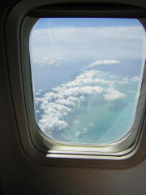 | It is an auspicious beginning to a vacation when the view from the airplane is as beautiful as the brochure. | |
| 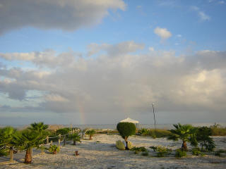 | On the first day came the free upgrade to an oceanview room. Thank you Turks and Caicos Club. Look, there is double rainbow, and it is not raining. |
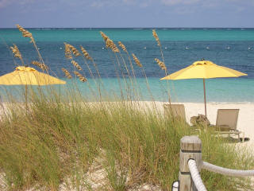 |
| 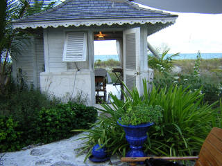 | The spa treatment rooms at Point Grace are perfect little oceanside retreats. | |
| 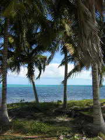 | We rode the resorts' beach cruisers from Grace Bay to Sailing Paradise in the Blue Hills area. The bikes were a bit iffy, and the roads really questionable, but the local drivers were amazingly courteous. | |
| 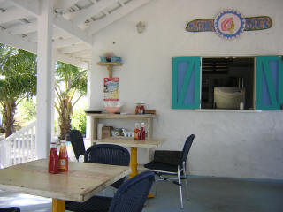 | "Da Conch Shack" served a nice lunch. We ate conch chowder and watched the conch wrangler sort out dinner from a corral out back. | 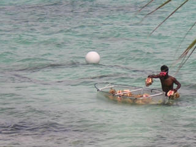 |
| 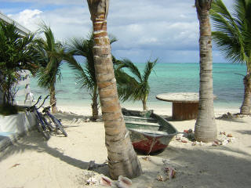 | There's room for a big crowd at "Da Conch Shack" | 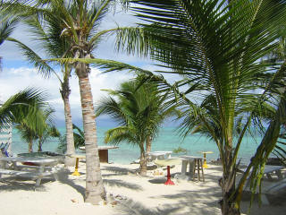 |
| 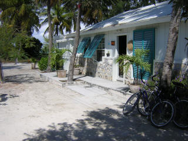 | Almost next door to "Da Conch Shack" is the Blue Hills Artisans Studio, which sells handmade baskets and other arts and crafts. Everything is made locally and is all the highest quality. | 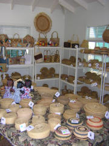 |
| 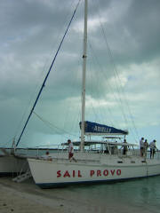 | Sail Provo took us snorkling and made a very nice rum punch. The punch made me very merry. We drank, snorkeled and watched the sunset. | 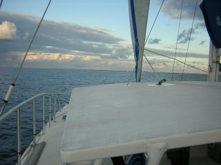 |
| 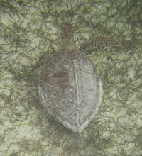 | The best thing about this trip was the beach and the snorkling. Our hotel was between White House Reef and Smith's Reef. I swam to White House Reef every morning. I saw sea turtles every day. The reefs had all sorts of fan corals and some fish. I took lots of really, really bad pictures with a disposable underwater camera. After I used up all the underwater film, I saw a Lion Fish and three HUGE spotted Eagle Rays at Smith's Reef. Really, I did. Take me back. I'll show you. |